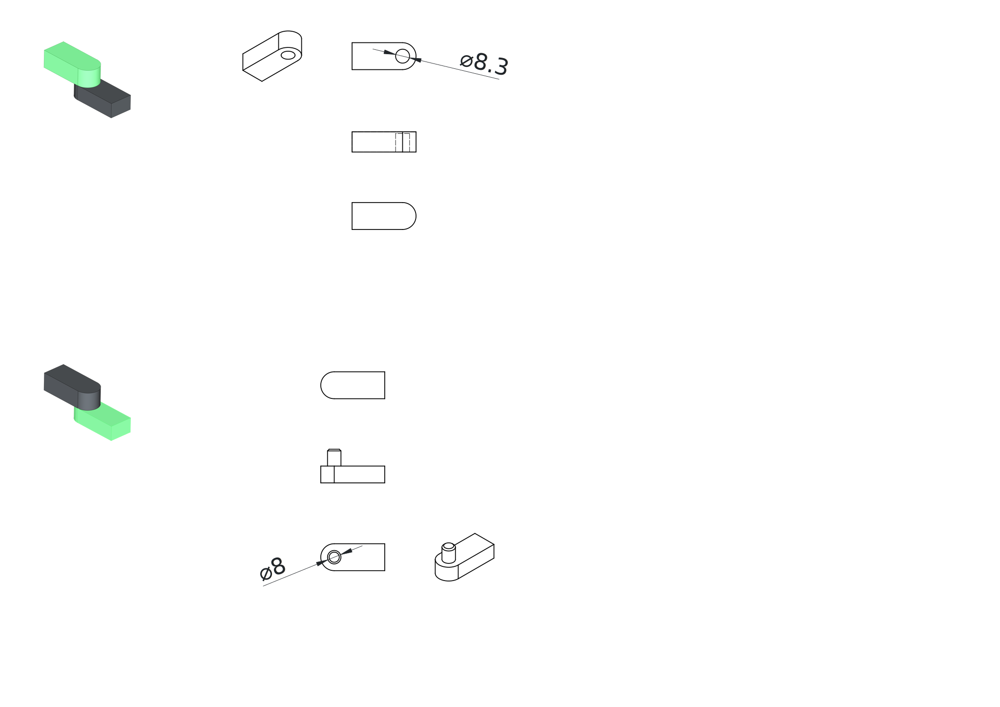
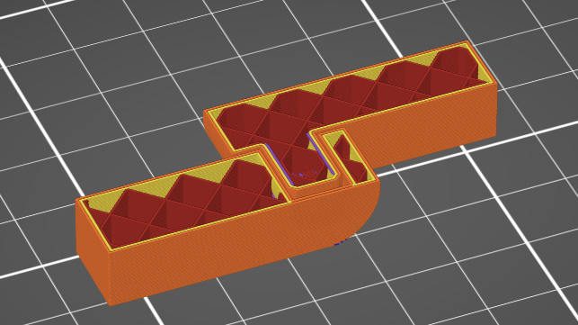
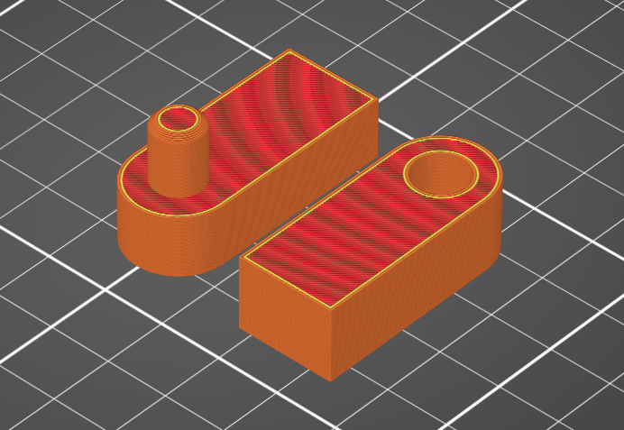
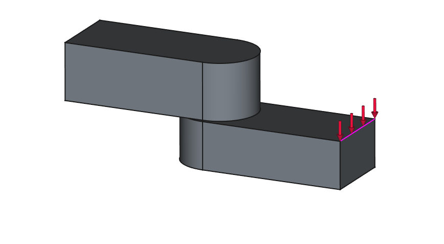

Charnière universelle simple et détachable
Explication
Une charnière simple détachable est un composant mécanique constitué de deux parties imbriquées pouvant pivoter l'une par rapport à l'autre autour d'un axe commun. Ce type de charnière permet la rotation selon une direction mais peut facilement se détacher lorsqu'une force est appliquée dans d'autres directions, ce qui la rend adaptée aux applications nécessitant un assemblage/désassemblage rapide mais avec une capacité de charge limitée.
Dessins
 Modèle FreeCad | Modèle Step
Analyse de l'orientation d'impression
Orientation horizontale de l'axe de rotation
Avantages : Résistance plus élevée à la traction et la flexion.
Inconvénients : Lignes de couche visibles sur les surfaces courbes, les tolérances sont moins précises.

Orientation verticale de l'axe de rotation
Avantages : Surfaces de rotation plus lisses.
Inconvénients : Risque de délamination des couches sous charge, structure globale plus faible en raison de l'orientation des couches.

Evaluation qualitative de la résistance aux contraintes
Effort 1

Effort 2 
| Orientation | Effort 1 | Effort 2 |
|---|---|---|
| Orientation verticale de l'axe | Résistance faible | Résistance faible |
| Orientation horizontale de l'axe | Resistance haute | Resistance moyenne |
Spécifications de jeu
| Orientation | Jeu | Résultats expérimentaux |
|---|---|---|
| Orientation verticale de l'axe | 0.15 | Jeu libre |
| Orientation horizontale de l'axe | 0.15 | Friction moyenne |
Paramètres d'impression
| Différentes impressions | Imprimante | Filament | Profil |
|---|---|---|---|
| Orientation verticale de l'axe | MK4 input shaper 0.4mm | Prusament PLA | 0.20mm Speed |
| Orientation horizontale de l'axe | MK4 input shaper 0.4mm | Prusament PLA | 0.20mm Speed |
Conseils d'optimisation de conception
Diamètre de l'axe
Augmenter le diamètre de l'axe pour une plus grande résistance.
Citations - Sources - Attribution
Pas d'application
Conclusion
La charnière universelle n'est pas une conception optimisée pour l'impression 3D.